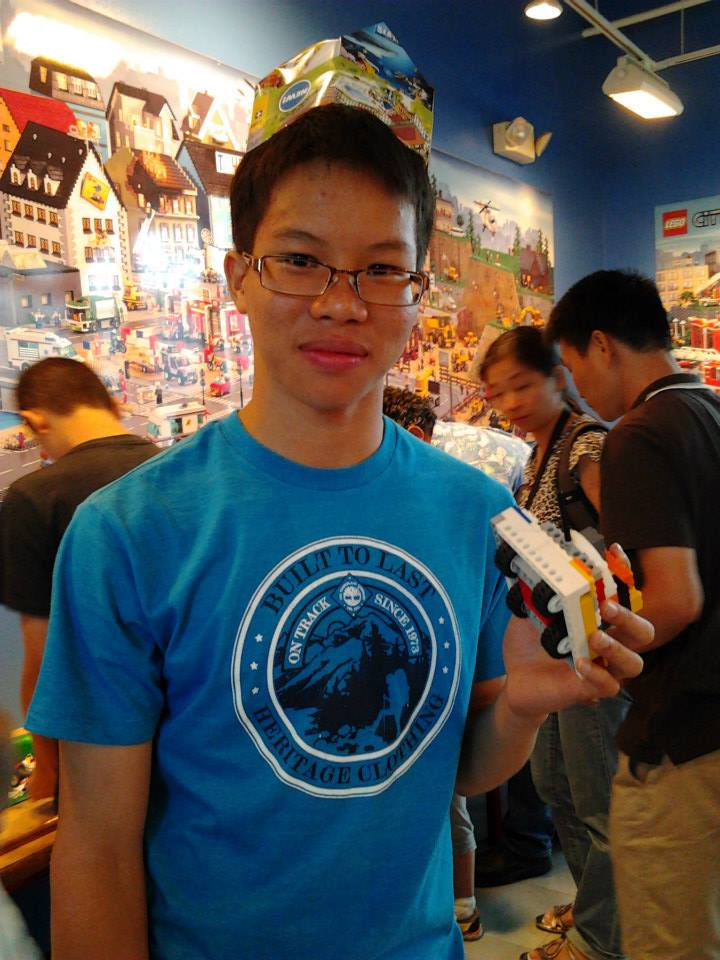

About Us
| James Chin | I've always loved engineering, and I currently bas my entire life around it. Not only have I been a member of my FTC team for 2 years, I have also mentored a total of three FLL teams in the last two years, and I plan to mentor 2-3 additional teams this coming year. I also build things on my free time, for myself and others. The amount of time, money, and effort I have put into engineering is astronomical compared to the time I've spent doing anything else. My biggest drive to continue working towards my engineering goals is that somday, I wish to spread the ideals of STEM to my community. The feeling you get when you make something all by yourself, or design something that works is the best feeling in the world, and I want to tshare that with as many people as I can. When I was younger, I didn't have many opportunities to make things outside of arts and crafts, so I want to give others the opportunities that I wish I had. My other interests include piano, tennis, and no much other stuff. |  |
|---|---|---|
President |
||
| Alvin Lin | I joined robotics because of an interest in computer programming as a career and I wanted to challenge myself with the difficulties that robtoics would present. From a young age, I've been extremely interested in the workings of computers and I enjoy tinkering with code in my free time. I enjoy the logical challenges presented by code and the engineering challenges presented by robotics. My other hobbies aside from robotics include playing basketball, League of Legends, piano, and guitar. |  |
Vice President |